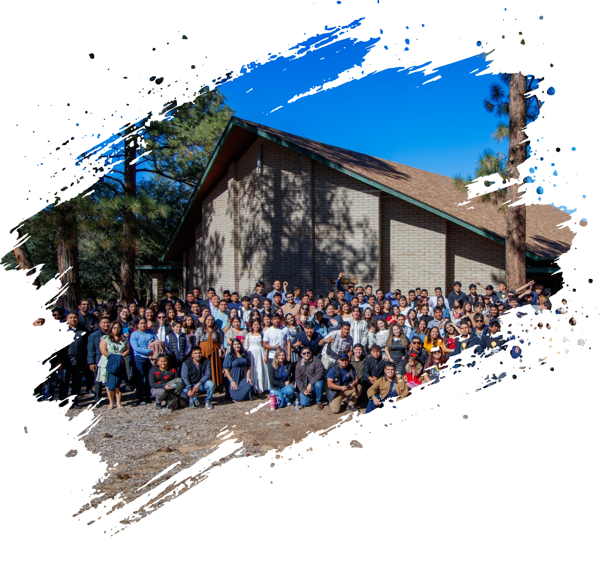

Modelo
Juvenil “S.A.N.A.R”
El modelo S.A.N.A.R. garantiza que cada actividad, desde la predicación más solemne hasta el juego más dinámico, tenga una razón de ser dentro del ecosistema del congreso.
Lugar
Phoenix, Arizona
Fecha
16-18 de octubre de 2026
El camino de sanidad
Las 5 Fases del Modelo S.A.N.A.R.
Suelta (Viernes por la noche) | La Catarsis Espiritual
El proceso de sanidad exige limpiar el terreno primero. Esta fase está diseñada para llevar a los jóvenes a la renuncia. Se invitará a la audiencia a soltar el peso de la culpa, los vicios, la ansiedad y las falsas expectativas que el mundo les impone. Para que un joven pueda descubrir su verdadera identidad, primero debe despojarse de todo lo que lo ata.
Ver las actividadesAbraza (Sábado por la mañana) | La Consolidación de la Identidad
Un corazón que ha sido vaciado no puede quedar a la deriva. En esta fase, el enfoque es pedir y recibir la unción del Espíritu Santo. Psicológica y espiritualmente, es el momento de la afirmación: los jóvenes son llamados a abrazar su adopción divina y su identidad en Cristo, llenando el espacio dejado la noche anterior con una profunda certidumbre espiritual.
Ver las actividadesNutre (Sábado después del lunch) | El Propósito en Acción
La identidad cristiana se estanca si no tiene un propósito. Una vez llenos del Espíritu, el paso lógico en su sanidad es volcarse hacia los demás. En este bloque, realizaremos un impacto misionero masivo. Al salir a compartir el mensaje de Dios y nutrir a la comunidad, los jóvenes viven su propósito de primera mano, pasando de la introspección a la acción.
Ver las actividadesAdora (Sábado por la tarde) | La Celebración Práctica de la Fe
Después de servir, la respuesta natural es la gratitud, pero entenderemos la adoración más allá del canto: como una actitud integral y de comunidad. Este bloque será altamente interactivo; aunque contaremos con participaciones musicales inspiradoras de distintos grupos de la Unión, el espacio integrará dinámicas grupales y juegos bíblicos. El orador conectará estas actividades bajo la premisa de que adorar es también celebrar nuestra fe juntos, reforzando el sentido de pertenencia y manteniendo la continuidad lógica del programa.
Ver las actividadesRecrea (Sábado por la noche y Domingo por la mañana) | El Bienestar Integral
La sanidad mental y espiritual incluye el esparcimiento sano. Para concluir la experiencia, demostraremos que la fe es práctica, alegre y relacional. A través de una gran kermés, torneos deportivos y dinámicas sociales, los jóvenes recrearán su mente y su cuerpo. Esto cierra el congreso fortaleciendo lazos de amistad, generando altos niveles de bienestar y dejando el deseo de regresar en el futuro.
Ver las actividadesOpciones de hospedaje cercanas
Te compartimos algunas sugerencias de Airbnb independientes al evento.
Recomendamos verificar su disponibilidad y reservar con tiempo, ya que los espacios suelen agotarse rápido.
{{ item.title }}


Cargando alojamientos disponibles...